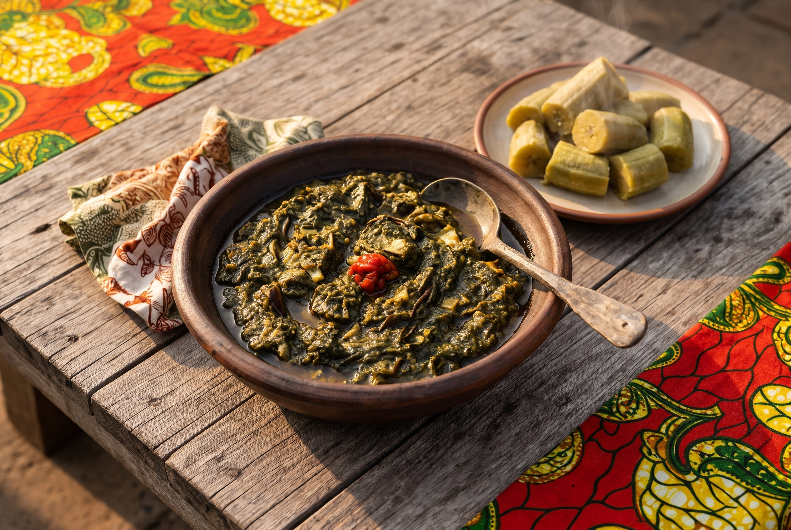
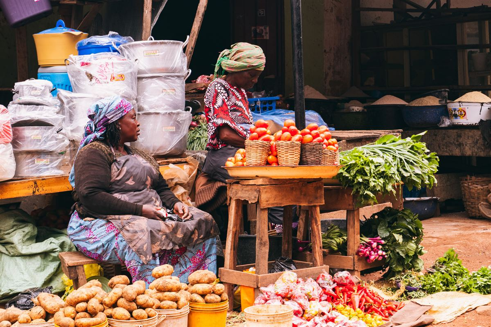
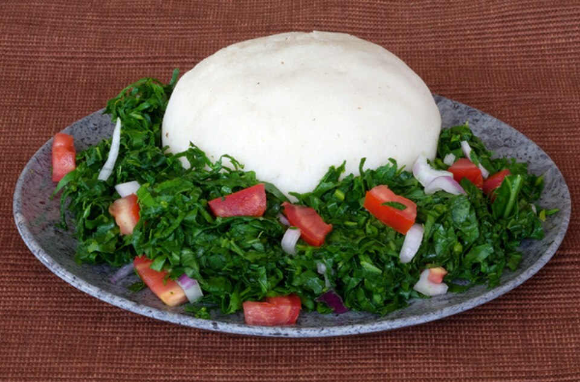
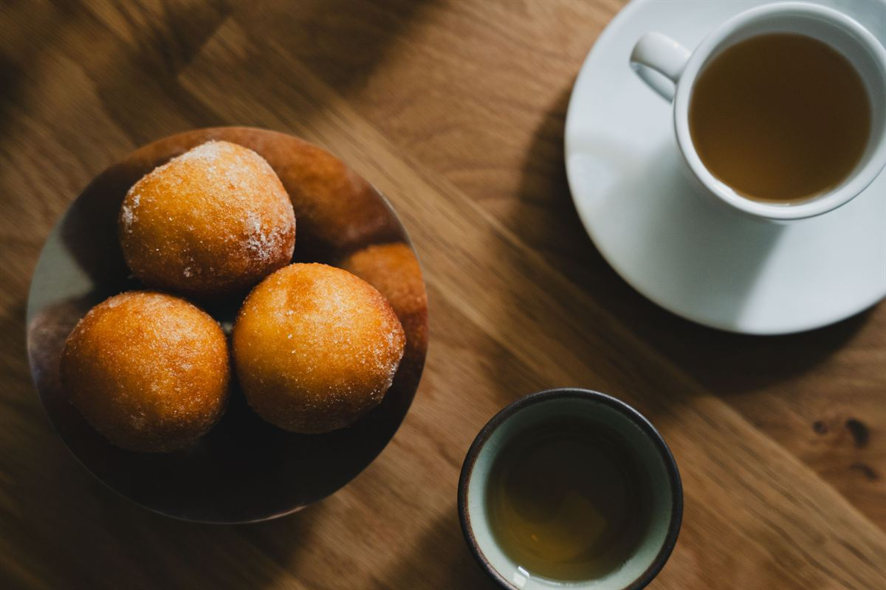

Isombe
Cassava leaves cooked down slowly and finished with peanut butter.
View recipeShaped by the Indian Ocean. Local grains and greens meet spices carried in by centuries of trade.
Countries covered: Kenya, Tanzania, Uganda, Rwanda, Burundi, Ethiopia, Eritrea, Somalia, Djibouti, South Sudan.
Arab, Indian and Italian influences arrived through Indian Ocean trade and changed how the region eats. Markets are full of vegetables, spices and grains, and meals are often shared. A meal might start with sambusas and spiced chai, then move on to ugali stirred into a firm porridge, greens simmered slowly with peanut, or rice cooked with whole spices.


Maize flour cooked into a firm porridge and eaten by hand.

Pounded and stewed into isombe in Rwanda and Burundi.

Cooked with whole spices into Somali bariis and pilau.

Lightly sweet fried dough, eaten with chai.
Leaves like cassava and spinach simmered slowly, often with peanut.
Maize flour beaten into boiling water until thick and smooth.
Sambusas and mandazi fried golden for the market and the tea table.

Cassava leaves cooked down slowly and finished with peanut butter.
View recipe